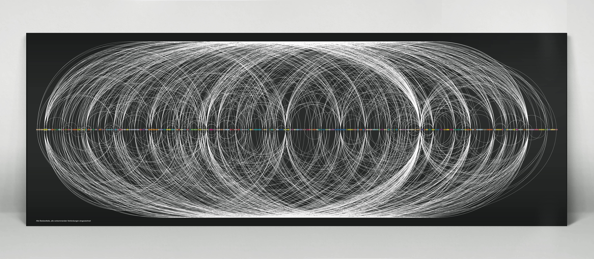
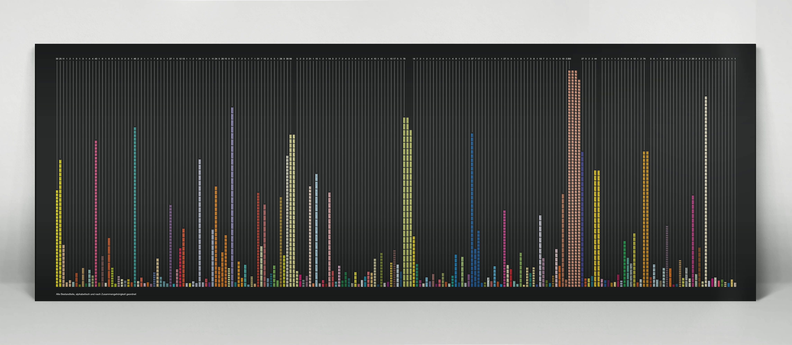
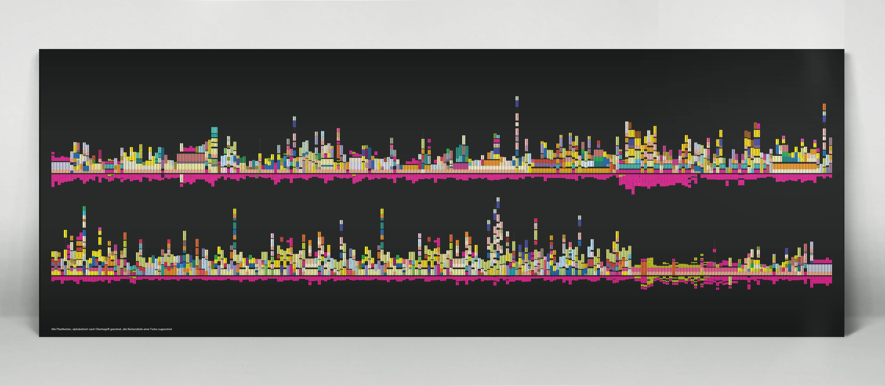
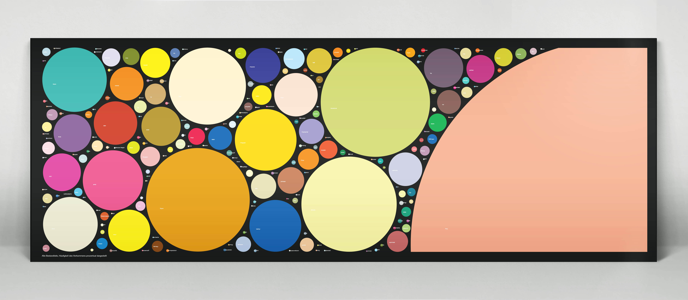
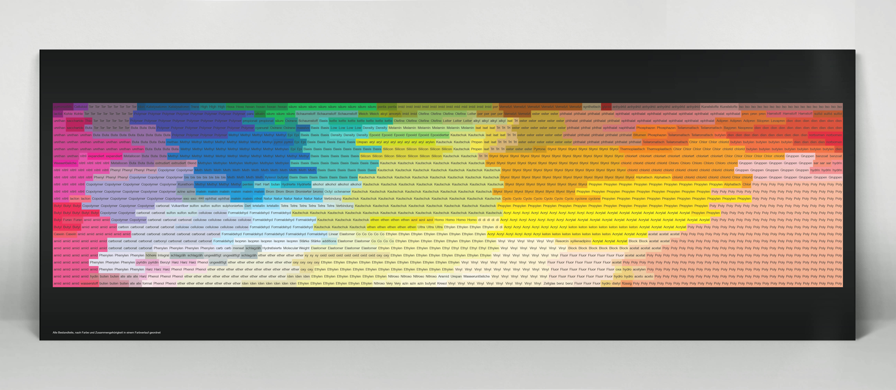

It’s such a substantial part of our lives, but yet we know so little about
it. An omnipresent material, yet so lost. Hundreds of different
kinds, yet we only know a fraction of it. Plastic is an effort to get
an overview, to get clarity, to understand.

Plastic, 830x297mm – School of Arts Bern, 2014
All constituent parts of plastics and their possibilities of combinations.

Plastic, 830x297mm – School of Arts Bern, 2014
All constituent parts of plastics ordered alphabetically and sorted by the
number of their frequency.

Plastic, 830x297mm – School of Arts Bern, 2014
All constituent parts of plastics sorted by Name, each constituent is assigned to a color.

Plastic, 830x297mm – School of Arts Bern, 2014
All constituent parts of plastics displayed by the procentual frequency of
their appearance.

Plastic, 830x297mm – School of Arts Bern, 2014
All constituent parts of plastics sorted by assigned color.